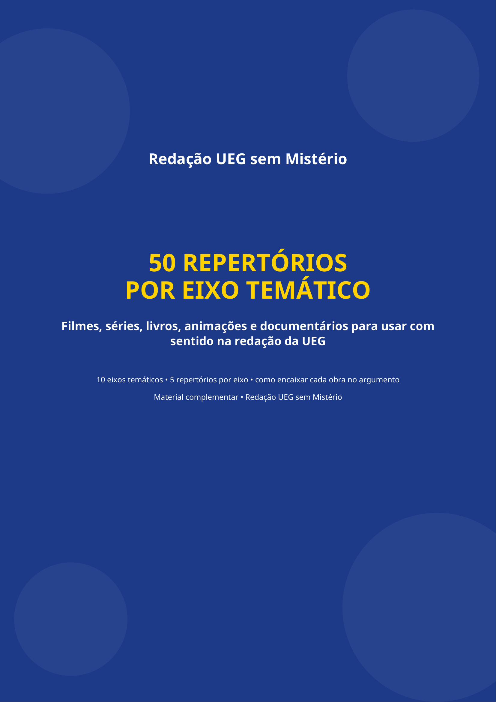

50 Repertórios por
Eixo Temático UEG

Como usar este material na reta final da UEG
Baixe e Salve no Celular
Clique no botão amarelo de download e salve o PDF no seu aplicativo de leitura favorito (Adobe Reader, Apple Books, Google Drive ou WhatsApp).
Escolha 2 ou 3 por Eixo
Você não precisa decorar todos os 50! Escolha as obras que você já assistiu ou leu para ter argumentos autênticos e repertório legítimo no dia da prova.
Aplique a Fórmula de Encaixe
Use a estrutura: Obra ➔ Situação relevante ➔ Relação com o tema ➔ Conclusão do raciocínio para nunca mais perder pontos em autoria.
Os 10 Eixos Temáticos que você vai dominar
Tecnologia, IA e Vida Digital
Black Mirror, Her, O Dilema das Redes, 1984 e Jogador Nº 1 para discutir algoritmos, dependência e inteligência artificial.
Identidade, Aparência e Comportamento Social
O Retrato de Dorian Gray, A Substância, Barbie, O Show de Truman e A Metamorfose para debater narcisismo e pressão estética.
Educação, Juventude e Formação
Sociedade dos Poetas Mortos, Escritores da Liberdade, O Menino que Descobriu o Vento, Matilda e Anne with an E.
Trabalho, Sucesso e Dinheiro
O Diabo Veste Prada, À Procura da Felicidade, Tempos Modernos, Ruptura e Nomadland para analisar produtividade e carreira.
Justiça, Violência e Ressocialização
Um Sonho de Liberdade, Os Miseráveis, Orange Is the New Black, Olhos que Condenam e Carandiru.
Meio Ambiente, Consumo e Sustentabilidade
WALL-E, Não Olhe para Cima, O Lorax, Okja e Uma Vida no Nosso Planeta para tratar de crise climática e consumo sustentável.
Saúde Mental, Emoções e Pressão Social
Divertida Mente, BoJack Horseman, A Redoma de Vidro, Cisne Negro e Pequena Miss Sunshine.
Informação, Mídia e Opinião Pública
The Post, Rede de Intrigas, Privacidade Hackeada, O Círculo e Boa Noite e Boa Sorte.
Desigualdade, Preconceito e Inclusão
Estrelas Além do Tempo, O Ódio que Você Semeia, Extraordinário, Parasita e O Sol é para Todos.
Família, Envelhecimento e Vínculos
Up - Altas Aventuras, Viva - A Vida é uma Festa, Meu Pai, This Is Us e Um Homem Chamado Ove.
Dúvidas sobre o download do material
Garanta seu repertório para a prova da UEG
Clique abaixo para salvar o e-book no seu dispositivo e estudar quando quiser.